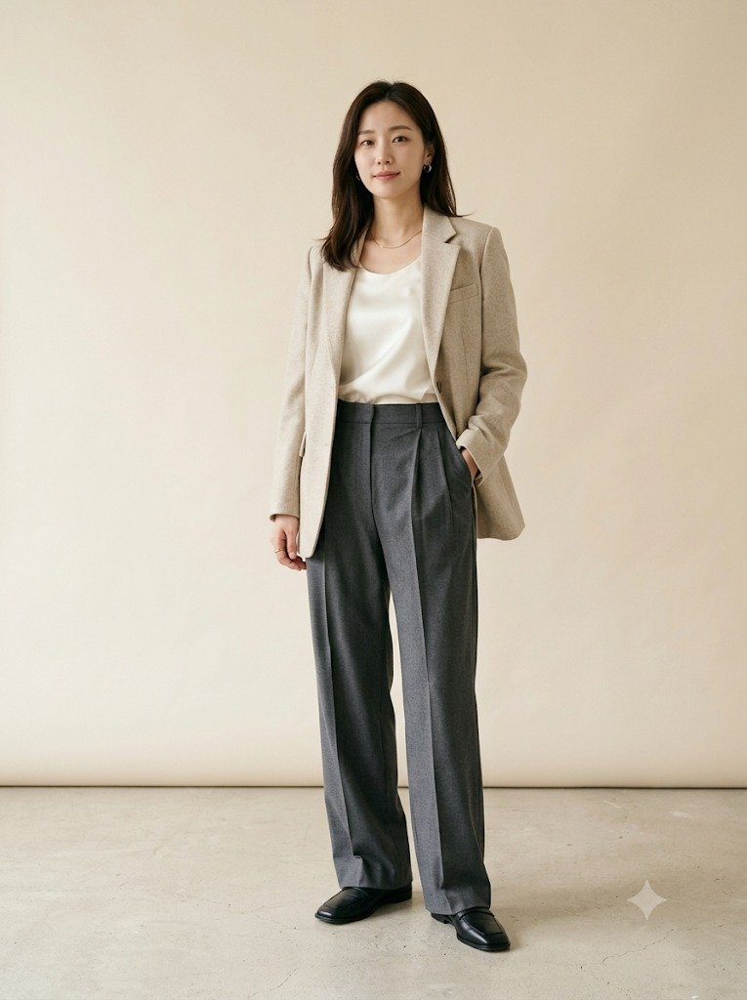
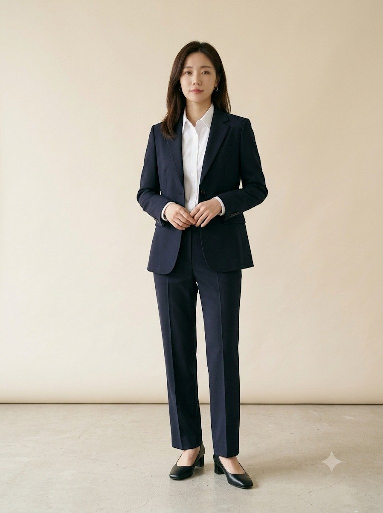
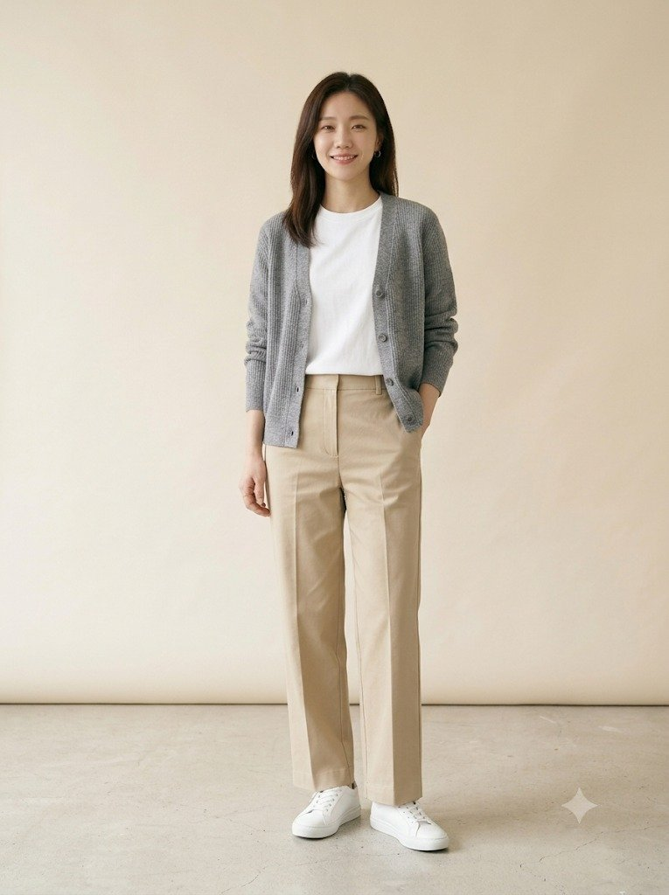
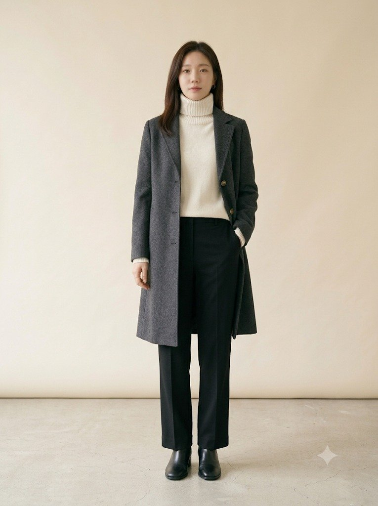

Lookbook
코디 룩북
상황별 출근 코디 4가지입니다. 룩마다 조합 이유, 어울리는 상황, 피할 조합, 예산별 대안, 핏 확인법, 관리법을 함께 정리했습니다.

LOOK 01
일반 출근
비즈니스 캐주얼
미니멀 테일러드 오피스코어 룩
블레이저·블라우스·와이드 슬랙스·로퍼로 만드는 기본 출근 코디.
룩북 읽기 arrow_forward
LOOK 02
면접
비즈니스 포멀
면접·첫 출근 네이비 포멀 셋업
면접·첫 출근·고객 미팅에서 실수 없는 네이비 셋업.
룩북 읽기 arrow_forward
LOOK 03
금요일 캐주얼
IT·스타트업
금요일 캐주얼 니트 카디건 룩
블레이저 없이도 단정한 금요일·IT 회사 출근 코디.
룩북 읽기 arrow_forward
LOOK 04
겨울
비즈니스 캐주얼
겨울 출근 차콜 롱코트 룩
겹쳐 입어도 둔해 보이지 않는 겨울 출근 코디.
룩북 읽기 arrow_forward